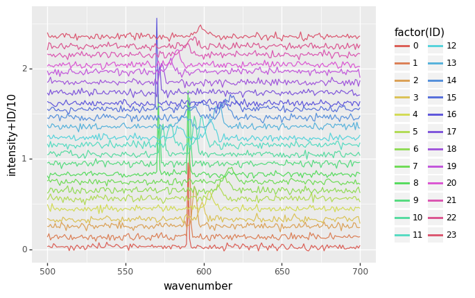
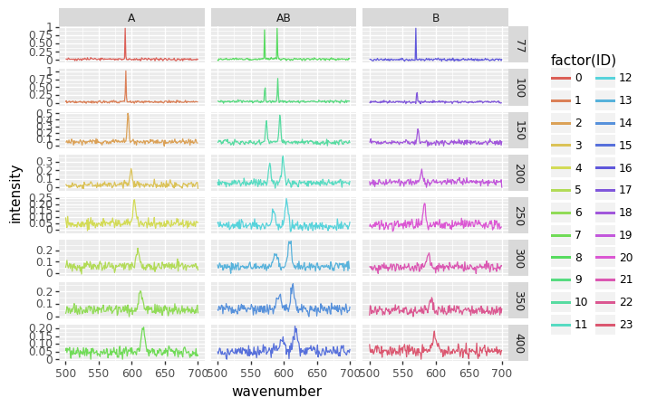

Wrangling 03 folder files meta
Reading many similar files from a folder and combining the results with info from a different source
import numpy as np
import pandas as pd
from matplotlib import pyplot
import matplotlib.pyplot as plt
First we try to read one file to make sure we're using the correct parameters:
test = pd.read_csv('metadata/001.txt', delim_whitespace=True, names=['wavenumber','intensity'])
test
| wavenumber | intensity | |
|---|---|---|
| 0 | 500 | 0.029038 |
| 1 | 501 | 0.036377 |
| 2 | 502 | 0.022507 |
| 3 | 503 | 0.017778 |
| 4 | 504 | 0.062998 |
| ... | ... | ... |
| 196 | 696 | 0.021754 |
| 197 | 697 | 0.005134 |
| 198 | 698 | 0.036723 |
| 199 | 699 | 0.013820 |
| 200 | 700 | 0.043075 |
201 rows × 2 columns
import glob
import os
path = r'metadata'
txt_files = glob.glob(os.path.join(path , "[0-9][0-9][0-9].txt"))
n = len(txt_files)
txt_files.sort()
txt_files
['metadata/001.txt',
'metadata/002.txt',
'metadata/003.txt',
'metadata/004.txt',
'metadata/005.txt',
'metadata/006.txt',
'metadata/007.txt',
'metadata/008.txt',
'metadata/009.txt',
'metadata/010.txt',
'metadata/011.txt',
'metadata/012.txt',
'metadata/013.txt',
'metadata/014.txt',
'metadata/015.txt',
'metadata/016.txt',
'metadata/017.txt',
'metadata/018.txt',
'metadata/019.txt',
'metadata/020.txt',
'metadata/021.txt',
'metadata/022.txt',
'metadata/023.txt',
'metadata/024.txt']
d = pd.concat((pd.read_csv(f, delim_whitespace=True, names=['wavenumber','intensity']) for f in txt_files), ignore_index=False, keys=range(n), names=['ID','row'])
d = d.reset_index(level=['ID']) # trick to convert the confusing (to me) multiindex into a standard column
d
| ID | wavenumber | intensity | |
|---|---|---|---|
| row | |||
| 0 | 0 | 500 | 0.029038 |
| 1 | 0 | 501 | 0.036377 |
| 2 | 0 | 502 | 0.022507 |
| 3 | 0 | 503 | 0.017778 |
| 4 | 0 | 504 | 0.062998 |
| ... | ... | ... | ... |
| 196 | 23 | 696 | 0.056958 |
| 197 | 23 | 697 | 0.061701 |
| 198 | 23 | 698 | 0.029431 |
| 199 | 23 | 699 | 0.050172 |
| 200 | 23 | 700 | 0.060158 |
4824 rows × 3 columns
Let's plot these to check that it makes sense:
#conda install -c conda-forge plotnine
from plotnine import *
# note the use of parentheses, because the syntax below (+) is non-standard in Python
(ggplot(d) +
geom_line(aes(x = 'wavenumber',
y = 'intensity+ID/10',
color = 'factor(ID)')))

<ggplot: (8782924166551)>
This seems reasonable, but now we'd like to retrieve the parameters for each file, which are stored in file parameters.txt.
meta = pd.read_csv('metadata/parameters.txt', delim_whitespace=True)
meta['ID'] = range(meta.shape[0])
meta
| temperature | sample | ID | |
|---|---|---|---|
| 0 | 77 | A | 0 |
| 1 | 100 | A | 1 |
| 2 | 150 | A | 2 |
| 3 | 200 | A | 3 |
| 4 | 250 | A | 4 |
| 5 | 300 | A | 5 |
| 6 | 350 | A | 6 |
| 7 | 400 | A | 7 |
| 8 | 77 | AB | 8 |
| 9 | 100 | AB | 9 |
| 10 | 150 | AB | 10 |
| 11 | 200 | AB | 11 |
| 12 | 250 | AB | 12 |
| 13 | 300 | AB | 13 |
| 14 | 350 | AB | 14 |
| 15 | 400 | AB | 15 |
| 16 | 77 | B | 16 |
| 17 | 100 | B | 17 |
| 18 | 150 | B | 18 |
| 19 | 200 | B | 19 |
| 20 | 250 | B | 20 |
| 21 | 300 | B | 21 |
| 22 | 350 | B | 22 |
| 23 | 400 | B | 23 |
Now we need to join those two data sets:
full = pd.merge(d, meta, on='ID')
We now have access to the whole set of variables corresponding to each data point:
(ggplot(full) +
geom_line(aes(x = 'wavenumber',
y = 'intensity',
color = 'factor(ID)')) +
facet_grid('temperature ~ sample', scales='free'))

<ggplot: (8782839719434)>
Download this page as a Jupyter notebook or as a standalone Python script.